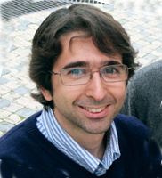

David P Judge is a Computer Scientist that teaches Bioinformatics since 1985. He runs the Bioinformatics Training Facilty housed at the Department of Genetics in the
University of Cambridge, providing the necessary environment for graduate and undergraduate courses, on top of a comprehensive training programme in cooperation with the
European Bioinformatics Institute, the Wellcome Trust Sanger Institute and the Instituto Gulbenkian de Ciência through GTPB. He teaches Bioinformatics in several international
training programmes and is regularly invited to teach in many places in Europe, Asia, Africa and America. His course notes and exercises are well known in the international
community of Bioinformatics professionals and users, many of which (difficult to count) have had their first contact with Bioinformatics through him. David pioneered Bioinformatics
Training at the IGC in 1986, in the scope of a MSc course. He collaborates in GTPB regularly since its inception in 1999, several times per year.
Affiliation: University of Cambridge, Department of Genetics, Cambridge, UK
|

Pedro Fernandes graduated in Electronics and Telecommunications Engineering at IST (U.T. Lisboa). He worked in Biomedical Engineering, Biophysics and Physiology and
changed to Bioinformatics in 1990. He established the first user community in Portugal around the national service provided by the portuguese node of the EMBnet. In 1998 he
created the Gulbenkian Training Programme in Bioinformatics, that provided user skills to more than 3200 course attendees throughout its twelve years of existance. In 2002,
in cooperation with Mario Silva from FCUL, he designed a graduate Programme in Bioinformatics. He currently teaches Bioinformatics both in graduate and undergraduate programmes.
Affiliation: Instituto Gulbenkian de Ciência, Oeiras, PT |
|

Daniel Sobral graduated in Informatics Engineering from Instituto Superior Técnico (Lisbon,
Portugal). His interest in Biology led him to join the Gulbenkian PhD programme, and conduct his doctoral
studies in Bioinformatics at the Université Aix-Marseille (France) with Dr. Patrick Lemaire. During
his PhD he worked in different aspects of bioinformatics, particularly focusing on gene expression networks
underlying embryonic development of a model organism, all of this integrated into a community resource.
Later he became a Developer for the Ensembl Project where he worked mostly in integrating epigenetic data
from the ENCODE project in Ensembl. In this context he gained significant experience with high throuthput
sequencing data. In 2012 he moved back to Portugal, where he joined the Bioinformatics Unit at the IGC to
assist the local research community in handling the sequencing revolution brought about by high throughput
technologies. Within this role he been collaborating in several projects, ranging from genomics,
transcriptomics and epigenetics. He has become the Head of the Bioinformatics Unit at IGC since 2014.
Affiliation: Instituto Gulbenkian de Ciência, Oeiras, PT
|